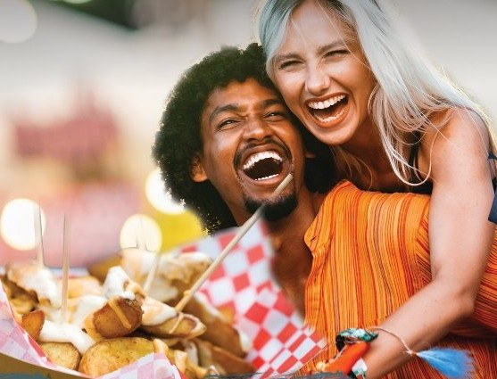
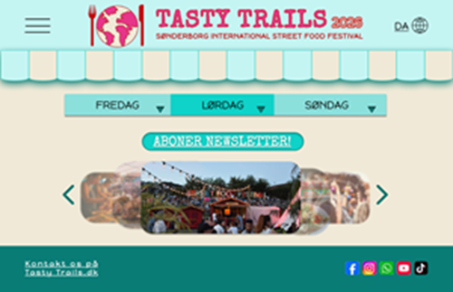
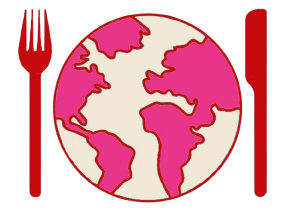
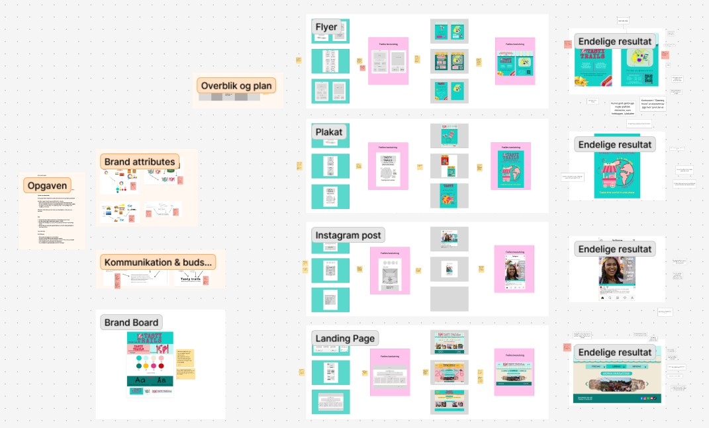

Værktøjer: Figma Design & FigJam
Projektbeskrivelse
Formålet med projektet var at udvikle en visuel identitet for
Sønderborg International Street Food Festival – en fiktiv event, der fejrer
mangfoldighed gennem mad, musik, kultur og
fællesskab.
Festivalen samler lokale, studerende og internationale borgere omkring madoplevelser fra hele verden og ønsker at skabe et tilbagevendende event med fokus på fællesskab og kulturudveksling.
Format
Alle produkter skulle tydeligt afspejle vores brand og visuelle identitet. Projektet omfattede:
- En plakat
- En flyer
- En landing page
- Et opslag til sociale medier
"Collage af tre produkter"
Formål med opgaven
- Grafiske principper (farver, typografi, komposition og hierarki)
- Kommunikation og budskabsformidling
- Branding og udvikling af en visuel identitet
- Iterativ designproces og feedback
Designets formål
- Fremhæve Sønderborgs internationale profil og styrke fællesskabet
- Tiltrække både lokale, turister og studerende
- Skabe en genkendelig branding for en tilbagevendende festival
Festivalen varer en weekend og byder på madboder fra hele verden, live-musik og workshops.
"Billede af webside"
Logo og navn
Vi ønskede, at navnet skulle være nemt at huske, men samtidig udtrykke festivalens internationale og mangfoldige karakter.
Navn: TASTY TRAILS - Sønderborg International Street Food Festival
Logoet blev designet ud fra enkelhed, genkendelighed og et udtryk der signalerer verden og mad.
"Billede af logoet"
Metodisk tilgang
Arbejdsproces
Vi arbejdede ud fra en iterativ designproces – fra individuel idéudvikling til fælles designretning.
Divergent → individuelt | Konvergent → fælles
image- screenshot fra FigJamMoodboard, Style Tile & Persona
- Klar branddefinition og visuel konsistens
- Gennemtænkte farver, typografi og hierarki
- Iterativ udvikling og feedback
"Billede af moodboard og farvepalette"
Lo-Fi Prototyping
- Discovery – brugerbehov og input
- Interpretation – definere udfordringer
- Ideation – udvikle idéer og skitser
- Experimentation – low-fidelity prototype
- Evolution – forbedre ud fra feedback
"Billede af vores 3 Lo-Fi skitser (websides)"
Hi-Fi Prototype i Figma
Den færdige prototype blev udviklet som en interaktiv Figma-løsning med komponentbaseret design og løbende brugertests.

"Billede af vores 3 Hi-Fi prototype skitser (flyer)"
Refleksion
Projektet gav en dybere forståelse for den iterative designproces og vigtigheden af at dokumentere beslutninger og tests løbende. Planlægning og struktur skaber bedre kreative resultater.
"Billede af vores præsentation"
Videreudvikling af visuel identitet
I det første projekt brugte vi clipart som bærende visuel stil. I videreudviklingen af landingpagen arbejdede jeg med varmere farver og autentiske billeder for at skabe et mere menneskeligt og stemningsfuldt udtryk.